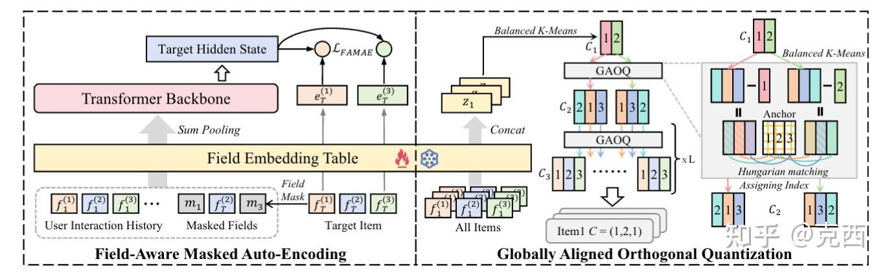
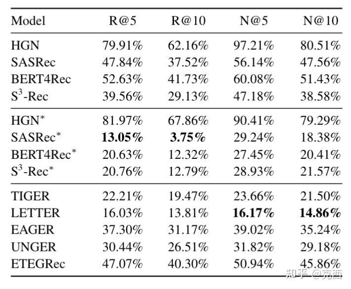

1. 语义ID现状
生成式推荐近几年有一条很重要的路线：不再把推荐看成“从海量 item ID 中打分检索”，而是把每个物品编码成一串离散 token，也就是 Semantic ID，简称 SID。模型预测下一个物品时，不直接输出 item ID，而是像语言模型一样逐 token 生成一个 SID。
例如一个物品可以被编码为：
[21, 3, 54]这样做有两个好处：
- item 空间被压缩成多级 token 空间，可以减少超大 item 表的压力。
- 推荐问题转变成序列生成问题，可以使用自回归解码、beam search 等生成式建模方法。
但 ReSID 指出了已有 SID 方案的一个根本问题：大多数方法把 SID tokenizer 当成语义压缩器，而不是推荐系统原生的预测接口。
典型流程是：
物品文本/图片
-> LLM 或多模态模型提取语义 embedding
-> RQ-VAE / RQ-KMeans / Hierarchical KMeans 离散化
-> 生成式推荐模型预测 SID这个流程看起来合理，但它隐含了一个假设：语义相似的物品在推荐中也应该相近。但很多时候这个假设并不成立。
比如“零食”和“气球”在文本语义上不相似，但它们可能在派对场景中经常被同一批用户共同购买。如果 tokenizer 只根据语义 embedding 编码，它就可能把这两个物品分得很远，从而丢掉推荐里真正重要的协同信号。
所以 ReSID 的核心问题是：
生成式推荐的 SID 应该怎样编码，才能既保留推荐任务需要的信息，又让自回归模型更容易预测？
2. ReSID 的核心观点
ReSID 的观点可以概括成一句话：
SID tokenizer 不应该围绕 LLM 语义空间设计，而应该围绕推荐任务的信息保留和序列可预测性设计。
论文把问题拆成两个阶段：
- E-stage：表示学习 学到一个适合推荐任务的连续 item 表示。
- Q-stage：量化编码 把连续表示离散化成适合自回归生成的 SID。
对应地，ReSID 提出两个组件：
FAMAE: Field-Aware Masked Auto-Encoding
GAOQ: Globally Aligned Orthogonal Quantization整体流程是：
结构化物品特征 + 用户历史
-> FAMAE 学习推荐原生 item 表示
-> GAOQ 量化成低歧义、可预测的 SID
-> T5-style 生成模型预测下一个 SID3. 为什么传统 SID tokenizer 不够好
论文主要指出了两类问题。
3.1 LLM 语义 embedding 和推荐目标不完全对齐
LLM 或多模态模型通常优化的是文本、图像等内容语义。它们擅长判断“两个物品描述是否相似”，但推荐系统更关心：
- 哪些物品经常被同一用户连续交互；
- 哪些物品处在同一个消费场景；
- 哪些跨品类转移在行为序列中高频出现；
- 哪些结构化属性对下一个行为有预测力。
因此，纯语义 embedding 容易出现两种错位：
语义相似，但推荐关系弱
语义不相似，但协同关系强已有方法尝试往语义 encoder 中注入协同信号，但 ReSID 认为这会带来几何约束冲突：语义目标希望语义相近的物品靠近，协同目标希望共现或可转移的物品靠近，两者不总是一致。
3.2 传统量化没有为自回归解码优化
SID 最终是被自回归模型逐 token 预测的，所以编码本身应该“好预测”。
但常见量化方法不一定满足这个要求。
RQ-VAE / RQ-KMeans 主要优化重构误差：
连续 embedding 能不能被离散 code 还原它们不关心：
给定前缀 code 后，下一个 code 是否容易预测Hierarchical KMeans 虽然有层级结构，但它通常在每个父节点下局部分配 child index。于是不同父节点下的同一个 child index 可能代表完全不同的方向。
比如：
(2, 1, 5) 里的第二级 token 1
(9, 1, 7) 里的第二级 token 1这两个 1 可能没有一致含义。对自回归模型来说，这会增加 token 的多模态歧义。

4. FAMAE：推荐原生的 item 表示学习
FAMAE 的全称是 Field-Aware Masked Auto-Encoding，核心思想是：不要先把结构化推荐特征转成自然语言再喂给 LLM，而是直接在推荐系统的结构化字段上做 masked prediction。
每个物品有多个结构化字段：
item_id
category
brand
price bucket
属性字段
其他 metadata 字段FAMAE 把用户历史和目标物品放进 Transformer。对目标物品的一部分字段做 mask，让模型根据：
用户历史 + 目标物品未被 mask 的字段去预测被 mask 的字段。
训练目标可以写成：
\(L_{FAMAE} = E[ sum_{k \ in \ M} alpha_k * (-log q_k(f_T^k | h_T)) ]\)
其中：
M是被 mask 的字段集合；f_T^k是目标物品的第 k 个字段；h_T是 Transformer 在目标位置的上下文化表示；q_k是字段 k 上的预测分布；alpha_k控制不同字段的重要性。
直观解释：
如果一个表示能根据用户历史预测目标物品的结构化字段，它就更可能保留推荐任务需要的信息。
4.1 为什么不用 \(h_T\) 直接做 SID
论文有一个很重要的细节：FAMAE 训练时会产生上下文化表示 \(h_T\) ，但最终用于 SID 量化的不是 \(h_T\) ，而是目标物品各字段 embedding 的拼接。
原因是 \(h_T\) 混入了具体用户历史，它更像这个用户场景下的目标表示。SID 应该是物品本身的稳定编码，不能随用户上下文改变。
所以 ReSID 最终使用：
\(concat(e_1, e_2, ..., e_J)\)
作为物品表示，其中 \(e_j\) 是第 j 个结构化字段的 embedding。
4.2 FAMAE 的两个诊断指标
ReSID 还提出了两个用于评价 E-stage embedding 质量的指标。
第一个是协同建模能力：
把目标物品所有字段都 mask 掉，只根据用户历史预测目标 item，看 Recall 表现。
第二个是语义/结构区分能力：
只 mask item_id 字段，看其他字段能否识别 item。
这两个指标分别对应：
是否保留协同预测信息
是否保留细粒度语义结构论文实验显示，这两个指标越好，下游 SID 生成推荐效果通常也越好。
4.3 FAMAE 到底在学什么
可以把 FAMAE 理解成一个目标物品字段恢复器。训练样本不是普通的：
用户历史 -> 下一个 item_id而是更细的字段级任务：
历史 item 的完整字段序列 + 目标 item 的部分可见字段
-> 目标 item 被 mask 的字段假设目标商品有这些字段：
item_id = i_123
cate1 = 家居
cate2 = 床上用品
brand = 某品牌
price_bucket = 中低价一次 FAMAE 训练可以 mask 掉 cate2 和 price_bucket，让模型根据用户历史和其他字段恢复：
cate2 = 床上用品
price_bucket = 中低价也可以把所有目标字段都 mask 掉，迫使模型主要依赖用户历史去预测目标物品信息。这样它学到的不是标题像不像，而是：
什么样的历史行为会指向什么样的目标字段组合这就是它比纯 LLM embedding 更推荐原生的原因。
4.4 FAMAE 的关键实现选择
第一，字段设计比模型结构更重要。FAMAE 假设结构化字段足够承载推荐所需信息，因此字段必须有预测价值。常见有用字段包括：
item_id
category 多级类目
brand / author / shop / creator
price bucket
tag
行为统计特征离散桶
内容主题簇如果字段只是噪声，FAMAE 会学到错误的充分统计量。
第二，mask 策略会影响表示偏向。如果经常 mask item_id，模型会更关注区分具体物品；如果经常 mask 类目、品牌、tag，模型会更关注语义和属性结构；如果把目标字段全 mask，模型更依赖用户历史，协同信号更强。
第三，字段权重 alpha_k 不是装饰项。item_id、类目、品牌、价格、tag 的重要性不一样。若 item_id 权重过高，模型可能退化成“记 ID”；若类目/tag 权重过高，模型可能只学粗粒度语义，丢掉细粒度推荐能力。
第四，FAMAE 不是端到端推荐模型。它的产物是 item embedding，不是最终排序分数。真正用于量化的是字段 embedding 的拼接，而不是用户上下文化的 \(h_T\) 。这一点能避免 SID 随用户历史变化，但也意味着 FAMAE 学到的是“全局物品编码”，不是个性化编码。
5. GAOQ：让 SID 更适合自回归预测
FAMAE 解决连续表示的问题，GAOQ 解决离散编码的问题。
GAOQ 的目标是同时优化三件事：
- 完整 SID 能重构 item 表示，减少信息损失。
- 单个 code token 自身语义稳定，减少歧义。
- 给定 SID 前缀后，下一级 token 更容易预测。
论文用信息论形式表达为：
\(min H(z | C) + mu * sum_l H(z | c_l) + lambda * sum_l H(c_l | C_<l)\)
可以把三项理解为：
H(z | C)：完整 SID 对 item 表示的重构不确定性；H(z | c_l)：单个层级 code 的语义歧义；H(c_l | C_<l)：自回归预测下一级 code 的不确定性。
另外还要保持每一层 code 使用均衡，避免某些 code 塌缩。
5.1 GAOQ 的算法流程
GAOQ 基于层级聚类，但解决了传统 Hierarchical KMeans 的局部索引混乱问题。
对某一层、某个父节点下的 item 集合，GAOQ 做：
1. Balanced KMeans
把父节点下的 item 表示分成 b_l 个平衡子簇。
2. Residualization / Centering
用子簇中心减去父簇中心，得到相对方向。
3. Anchor Construction
构造一组近似正交的全局 anchor 方向。
4. Hungarian Matching
根据余弦相似度，把子簇中心匹配到全局 anchor。
5. Code Assignment
子簇内所有 item 使用匹配到的 anchor index 作为该层 code。最关键的是第 3 和第 4 步。
它们让不同父节点下的同一个 child index 尽量代表一致的方向。
也就是说，GAOQ 希望：
第二层 token 3在不同一级前缀下仍然有相对稳定的含义，而不是每个父节点内部随便编号。
这会降低自回归模型的学习难度，因为 code token 的含义更 prefix-invariant。
5.2 GAOQ 和 Hierarchical KMeans 的关键差别
普通 Hierarchical KMeans 的问题不是分层本身，而是每个父节点下面的子编号是局部随意的。
假设一级聚类有两个父节点：
父节点 A：手机、耳机、充电器
父节点 B：零食、气球、纸杯在父节点 A 下，二级编号 1 可能表示“配件方向”；在父节点 B 下，二级编号 1 可能表示“派对装饰方向”。这对树结构本身没问题，但对生成模型有问题，因为生成模型看到的 token id 是共享的。它会困惑：
c_2 = 1 到底代表什么？GAOQ 做的事情是：每个父节点内部聚类后，不直接给子簇编号，而是先把子簇中心减去父簇中心，得到“相对于父节点的方向”，再把这些方向匹配到全局 anchor。
所以它不是要求不同父节点下的物品绝对位置相同，而是要求：
同一个二级编号在不同父节点下，尽量代表相似的相对方向这比全局统一聚类更灵活，也更适合自回归解码。
5.3 为什么要 Balanced KMeans
SID 每一层如果 code 分布极不均衡，会出现两个问题。
第一，热门 code 太多，模型预测时容易塌缩到少数 token，候选多样性下降。
第二，冷门 code 样本少，自回归模型学不好，长尾 item 更难生成。
Balanced KMeans 的作用是让每个分支尽量承载接近数量的 item。它不是为了提升语义纯度，而是为了让 SID token 作为训练标签更稳定、更均衡。
不过这里也有代价：强行平衡可能切开天然大簇，使某些语义/协同结构被拆散。因此 branching factor 和 balance 约束强度会明显影响效果。
5.4 分支因子怎么理解
论文使用三层 SID，不同数据集的 branching factor 不同。例如 Musical Instruments 使用 (32, 40, 19)，Books 使用 (256, 256, 8)。
可以粗略理解为：
前两层负责粗到中粒度分组
最后一层负责在前缀下区分具体 item分支太小，SID 容量不够，多个 item 被挤在相近 code 里，重构损失大。分支太大，下一层 token 选择空间变大，自回归预测更难。
论文在 Musical Instruments 上发现，b1 * b2 大约比 item vocabulary 小 10 到 20 倍时效果较好。这不是普适定律，但给了一个实用启发：SID 不是越细越好，它要在“容量”和“可预测性”之间找平衡。
6. 和传统方法的本质区别
可以用一张对比表理解 ReSID。
| 方法 | 表示来源 | 量化目标 | 主要问题 |
|---|---|---|---|
| TIGER | 文本语义 embedding | RQ-VAE 重构 | 协同信号弱 |
| LETTER / EAGER / UNGER | 语义 + 协同混合 | 多目标 tokenization | 语义与协同目标可能冲突 |
| ETEGRec | 端到端学习 SID | 推荐目标反传 | SID 和生成模型相互干扰，目标非平稳 |
| ReSID | 结构化字段 + 用户历史 | 信息保留 + 序列可预测 | 更推荐原生，但依赖结构化字段质量 |
7. 实验设计
论文在 Amazon-2023 的 10 个子集上评估，包括：
- Musical Instruments
- Video Games
- Industrial & Scientific
- Baby Products
- Arts, Crafts & Sewing
- Sports & Outdoors
- Toys & Games
- Health & Household
- Beauty & Personal Care
- Books
评估指标是：
Recall@5 / Recall@10
NDCG@5 / NDCG@10最后一个交互做测试，倒数第二个交互做验证。
很多 SID 方法用了丰富的 item metadata，而传统 SASRec 等序列模型只用 item ID，这会让 SID 方法占额外信息优势。因此 ReSID 同时比较了：
- 只用 item ID 的序列模型；
- 加入结构化 side information 的序列模型；
- SID-based 生成式推荐方法。
这个设置很重要，因为它试图回答：
SID 本身真的有效，还是只是因为它用了更多 side information？
8. 实验结果

主实验显示，ReSID 在十个数据集上整体最强。
论文报告的平均相对提升包括：
- 相比最好 SID baseline LETTER，Recall@5 / Recall@10 提升约 16.0% / 13.8%；
- NDCG@5 / NDCG@10 提升约 16.2% / 14.9%；
- 相比 TIGER、EAGER、UNGER、ETEGRec 等方法也有稳定提升；
- 平均相对提升超过 10%；
- 量化阶段比 LETTER 快 77 到 122 倍，比 TIGER 约快 5 倍。
消融实验也很关键：
8.1 替换 FAMAE
固定 GAOQ，把 FAMAE 换成：
- LLM embedding；
- SASRec representation；
- BERT4Rec representation。
结果 ReSID 都更好。说明单纯语义表示不够，单纯协同表示也不够，关键是字段级、推荐原生、同时保留结构语义和协同预测信息的表示。
8.2 替换 GAOQ
固定 FAMAE，把 GAOQ 换成：
- RQ-VAE；
- Hierarchical KMeans。
结果 ReSID 仍然更好。说明有了好的连续表示还不够，量化方式必须考虑自回归解码的不确定性和 code 语义一致性。
8.3 对比
论文用 t-SNE / UMAP 比较 FAMAE、BERT4Rec、Sentence-T5 的 embedding。
观察结果是：
- Sentence-T5 语义聚类清晰，但协同行为社区不够好；
- BERT4Rec 能反映协同结构，但语义类别结构较弱；
- FAMAE 同时保留语义类别结构和行为社区结构。
这支撑了论文主张：FAMAE 不是简单丢弃语义，而是把语义和协同信号放进推荐任务原生的结构化字段空间里。
9. 主要贡献
9.1 推荐 tokenizer 应该由协同预测主导
生成式推荐最终要预测用户下一个会交互的物品。因此 item 表示首先要保留协同预测信息，而不是首先服从通用语义空间。
9.2 SID 不只是压缩码，还是生成目标
SID 不是普通离散编码。它会成为下游模型的训练标签和解码目标。因此 SID 本身必须好预测。
如果量化方法只关心重构误差，而忽略 H(c_l | C_<l)，就可能生成对自回归模型不友好的 code。
9.3 不依赖 LLM 反而可能更适合工业推荐
ReSID 的标题里有 “Beyond LLMs”，不是否定 LLM，而是强调：对于 SID tokenizer 来说，重型 LLM embedding 不一定是最合适、最高效的路径。
如果平台已经有丰富结构化字段和行为日志，那么推荐原生的表示学习可能更便宜、更稳定，也更贴近下游目标。
10. 未来工作
ReSID 的思路很清楚，但仍有一些值得继续追问的地方。
10.1 对结构化字段的依赖很强
ReSID 的前提是：结构化字段 F 在给定用户历史 H 时足以承载推荐所需信息。论文中这个假设可以写成：
\(Y ⊥ X | (F, H)\)
也就是原始内容 X 对目标 Y 的额外信息，可以被结构化字段和用户历史吸收。
这个假设在 Amazon 这类字段较规整的数据集上比较合理，但在真实工业场景里未必总成立。很多平台的物品信息可能存在：
字段缺失
类目体系粗糙
tag 噪声大
新物品冷启动字段稀疏
多模态内容没有被充分结构化如果结构化字段质量不高，FAMAE 就可能学到不完整甚至有偏的 item 表示。论文没有系统分析字段质量下降时 ReSID 的鲁棒性。
10.2 对多模态原始内容利用不足
论文标题强调 Beyond LLMs，这是亮点，但也带来一个问题：它主要证明“不依赖 LLM embedding 也能做好 SID”，还需要充分探索：结构化字段 + 多模态内容 + 行为信号三者如何融合。
在短视频、直播、广告推荐中，画面、音频、OCR、ASR、商品图等原始内容很重要。完全依赖结构化字段可能会损失内容细节。更合理的方向可能不是“抛开 LLM/多模态模型”，而是让它们退到辅助位置：行为信号主导、结构化字段约束、多模态语义补充。
10.3 GAOQ 缺少可独立诊断指标
FAMAE 有两个 task-aware 指标，可以在不完整训练下游生成模型的情况下判断 embedding 好不好。但 GAOQ 没有同等级别的诊断工具。
论文证明和实验说明 GAOQ 有效，但如果实际落地时想快速比较两个 tokenizer，还不够方便。我们仍然需要训练下游 G-stage 才能准确知道量化是否好。
更理想的情况是有一组 tokenizer 级别指标，例如：
每层 code 使用熵
prefix-conditional entropy
同 code 内 embedding 方差
同 code 内行为共现一致性
不同前缀下同 index 的方向一致性
目标 item 与历史 item 的 SID prefix overlap这些指标可以帮助我们不训练完整生成模型就初筛 tokenizer。
10.4 G-stage 收敛慢的问题还没有解决
SID-based generative models 收敛速度比 SASRec 这类 item-ID 模型慢很多。对于工业系统来说，这是生成式推荐很现实的问题。
一个 item 要拆成多 token 预测
beam search 训练/推理成本高
错误会沿 SID 层级累积
长尾 code 学习信号稀疏ReSID 改善了 tokenizer，但没有从根本上解决生成模型训练慢、解码慢的问题。
10.5 对动态更新不够友好
工业推荐里的 item 集合不断变化。如果每天都有大量新增物品，SID tokenizer 需要支持增量更新。
但 GAOQ 是全局聚类 + 全局对齐。如果新增 item 很多，可能面临：
是否重新训练 FAMAE
是否重新聚类
旧 item 的 SID 是否变化
生成模型是否需要重新训练
新旧 SID 如何兼容论文没有详细讨论 incremental tokenization。这是落地时很关键的问题，因为线上系统通常不能频繁改变所有物品的 token。
11. 总结
ReSID 的核心思想可以压缩成一句话：
用推荐任务原生的结构化字段和用户行为来学习 item 表示，再用全局对齐的层级量化生成更稳定、更可预测的 Semantic ID。
FAMAE 解决“连续表示是否保留推荐信息”的问题，GAOQ 解决“离散 SID 是否适合自回归预测”的问题。两者合在一起，使 ReSID 不依赖 LLM embedding，也能在多个公开数据集上超过强序列推荐和已有 SID 生成式推荐方法。
这篇论文的价值在于，它把生成式推荐 tokenizer 从“语义压缩工程”提升成了一个有信息论目标、有推荐任务对齐、有解码友好性约束的系统设计问题。